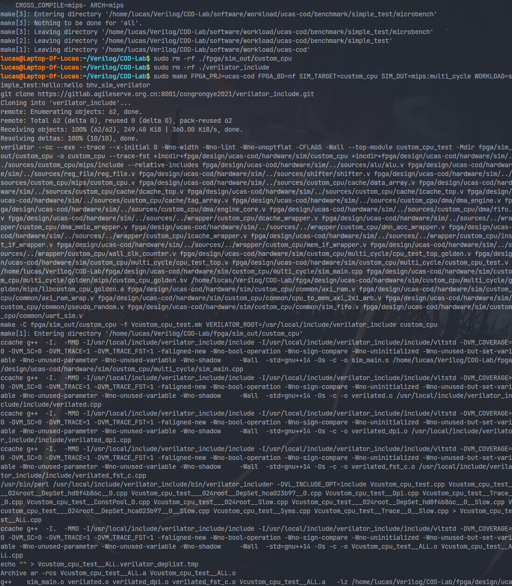

cod-lab 本地仿真环境配置
经过亲身实践，本方法可以在 S-IDE 和 Ubuntu 22.04.4 LTS on Windows 10 x86_64 环境下成功进行软件编译和行为仿真。（其他 Linux 版本应该也可以......吧）
verilator
在 这里 下载 4.222 版本的 verilator 。

找一个目录（不要放到框架里，可以选择 ~ 主目录）本地解压即可，然后 cd verilator-4.222
依次执行以下命令
sudo apt-get install git help2man perl python3 make autoconf g++ flex bison ccache
sudo apt-get install libgoogle-perftools-dev numactl perl-doc
autoconf # Create ./configure script
./configure # Configure and create Makefile
# 下面这两步会很漫长，如果在 S-IDE 上编译可能会花个二三十分钟
# 如果 S-IDE 分配的内存太小，可能因为内存占用过大被操作系统杀死进程
# 我测试 S-IDE 的时候开了 16 G，也整了很久
make -j `nproc` # Build Verilator itself (if error, try just 'make')
sudo make install
mips-gcc
依次执行以下命令
cd && git clone https://github.com/rm-hull/barebones-toolchain.git
sudo ln -s ~/barebones-toolchain/cross/x86_64/bin/mips-gcc /usr/local/bin/mips-gcc
展示
以 hello 为例
软件部分：


没错它就是这么长
硬件部分
记得先把 fpga/sim_out/custom_cpu 和 verilator_include 删干净！！！
记得先把 fpga/sim_out/custom_cpu 和 verilator_include 删干净！！！
记得先把 fpga/sim_out/custom_cpu 和 verilator_include 删干净！！！
